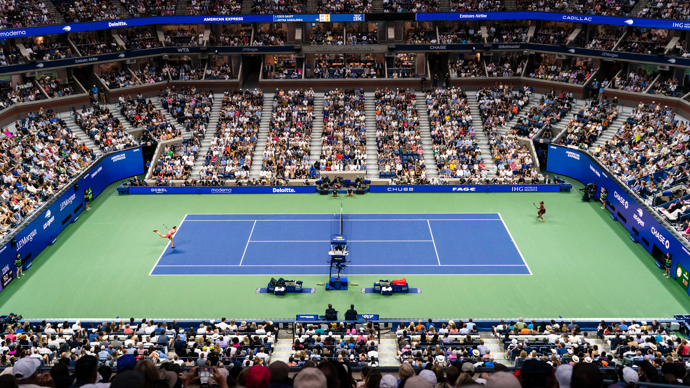

US Open é um dos quatro torneios do Grand Slam do tênis, realizado anualmente em Nova York, nos Estados Unidos, desde 1881. Disputado em quadras rápidas, o torneio é conhecido pela sua energia vibrante, partidas noturnas e atmosfera moderna.
É um dos eventos mais importantes do calendário do tênis, reunindo os melhores jogadores do mundo em busca de um dos títulos mais prestigiados do esporte.
 Voltar para a Página Principal© 2025 Tennis Club - All rights reserved.